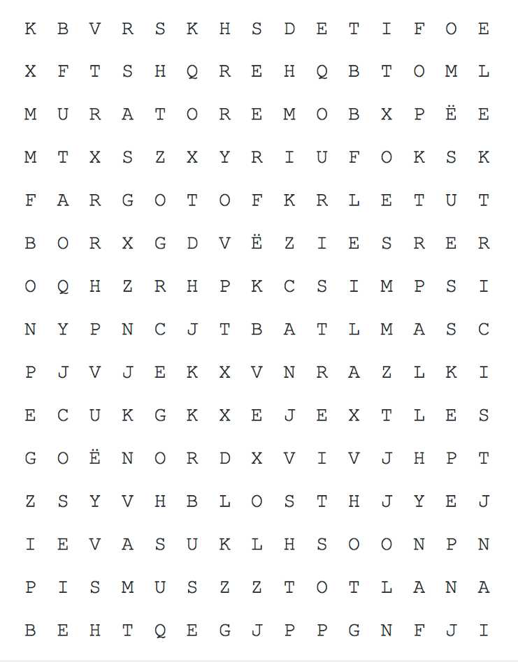

TEMATIKA 2: KARRIERA IME4. Luajmë “profesionesh” (Veprimtari)
Puno në klasë
Ndihmë: si të punoj?
Shkruaj përgjigjen tënde. Mund ta thuash edhe me zë ose t’ia tregosh dikujt që shkruan për ty. Kur të mbarosh, shtyp butonin “Dërgo”.
Nëse sheh mirë, mund t’i kërkosh profesionet edhe në tetëkëndëshin me shkronja.
1.
Me shokun/shoqen e bankës, gjeni sa më shumë nga profesionet e shënuara në tetëkahoren e mëposhtme.
Shkronjat e secilit profesion janë përzier. Vendosi në radhë dhe shkruaj emrin e profesionit.
